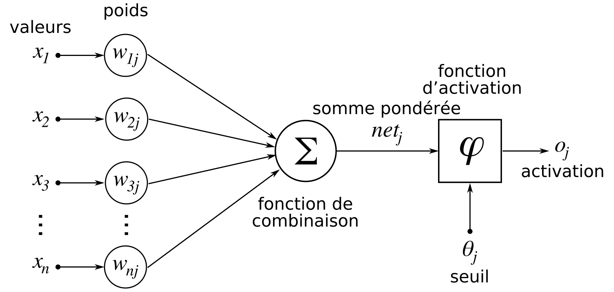
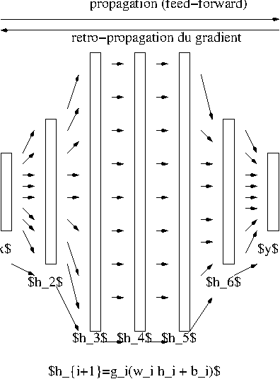
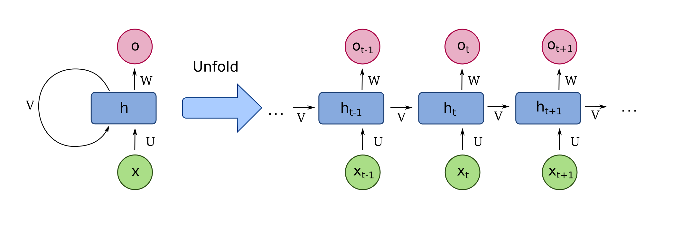

Fonctionnement d’un modèle de langue
Les LLM fonctionnent grâce à des réseaux de neurones récurrents, qui ont appris à prédire le prochain jeton selon les jetons qu’il a lus précédemment.
C’est le même fonctionnement que votre application de rédaction de MMS qui vous propose des mots probables selon les mots précédents dans votre message en cours d’écriture.
Un réseau de neurones est une structure informatique qui apprend à mettre en relation une entrée et une sortie. On fournit au réseau des paires pour lesquelles il doit déterminer une relation fonctionnelle.
Entrée comme sortie peuvent être quasiment n’importe quel type de donnée : numérique, texte, image, vidéo, etc. Tout finira par être transformé en vecteurs de nombre, par une opération d’embedding (intégration en français).
Un neurone est un objet informatique, qui possède :
Un neurone reçoit des informations, à sa manière, et transmet une information.

Un réseau de neurones structure la transformation :

Il faut voir une couche de neurones comme étant une projection de son entrée vers un espace de redescription où la similarité entre les objets étudiés sera plus discriminante que celle de l’espace initial.
La notion de discrimination est définie ici par le contexte d’appariement fourni au cours de l’apprentissage.
La tâche d’entraînement d’un réseau de neurones, appelée apprentissage, consiste sur un réseau vierge à présenter un exemple d’entrée et de mesurer la sortie obtenue. Cette sortie est comparée à la sortie attendue ou vérité, selon une mesure de perte définie, qui sert d’indication au réseau pour être modifié.
La modification des poids du réseau procède par rétro-propagation de gradient. Le gradient est le mot physique pour variation. De la sortie à l’entrée, on propage la variation entre la sortie obtenue et la vérité - dans la pratique, on fait des groupes d’instances (batch) et on rétro-propage la moyenne.
Lorsque les données sont de nature séquentielle, c’est-à-dire concerne une évolution temporelle ou spatiale, il faut un réseau capable de traiter des entrées séquentielles : un réseau de neurones récurrent. Les applications sont nombreuses : texte, vidéo, audio, trajectoires.
Un réseau récurrent est constitué de cellules égrénant le temps, reliées aux autres cellules par des mécanismes d’attention. La largeur de la fenêtre d’attention définit la taille du contexte.

Un LLM (ou large language model) est un modèle de langue constitué par un réseau de neurones récurrent entraîné à prédire des tokens de texte à partir d’un contexte de tokens, sur des corpus de textes proportionnels à sa taille.
La façon de tokenizer le texte est importante. Cette fonctionnalité peut elle-même être fournie par un LLM.
comment le modèle s’arrête-til de produire des jetons ## system prompt ## évaluation
Sur les paramètres de la génération
https://huggingface.co/docs/transformers/model_doc/t5
i’m like 80% this is how o1 works: >collect a dataset of question/answer pairs >model to produce reasoning steps (sentences) >r env where each new reasoning step is an action >no fancy model; ppo actor-critic is enough >that’s literally
https://www.reddit.com/r/LocalLLaMA/comments/1h1q8h3/alibaba_qwq_32b_model_reportedly_challenges_o1/
https://medium.com/@wadan/what-researchers-need-to-know-about-openais-new-o1-model-cfda50f18d1a
The ARC benchmark (Abstraction and Reasoning Corpus), created by Google engineer François Chollet,
https://github.com/huggingface/smol-course/tree/main https://github.com/huggingface/smol-course/tree/main/1_instruction_tuning
Tuning de Smollm puis sauvegarde sur le hub
https://www.anthropic.com/news/model-context-protocol
https://www.promptingguide.ai/fr/models/gpt-4 blog sur l’évaluation de GPT-4 avec quelques exemples dans le playground
From metrics to insight, Power your metrics and alerting with the leading open-source monitoring solution : https://prometheus.io/
https://opentelemetry.io/docs/what-is-opentelemetry/
IOB tagging inside out beginning
https://www.trinetix.com/insights/what-are-large-action-models-and-how-do-they-work
C’est plutôt dédié à la productivité. Tu programmes des tâches variées. L’app est à <sellagen.com/nelima>
https://docs.searxng.org meta moteur de recherche pour alimenter en contexte